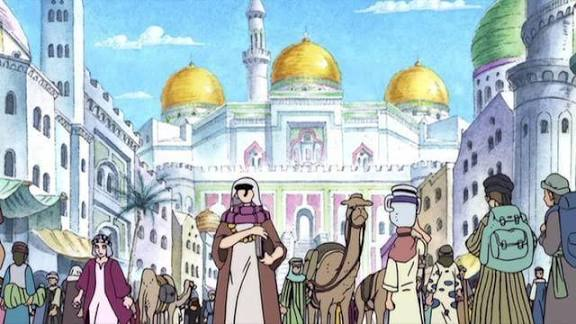
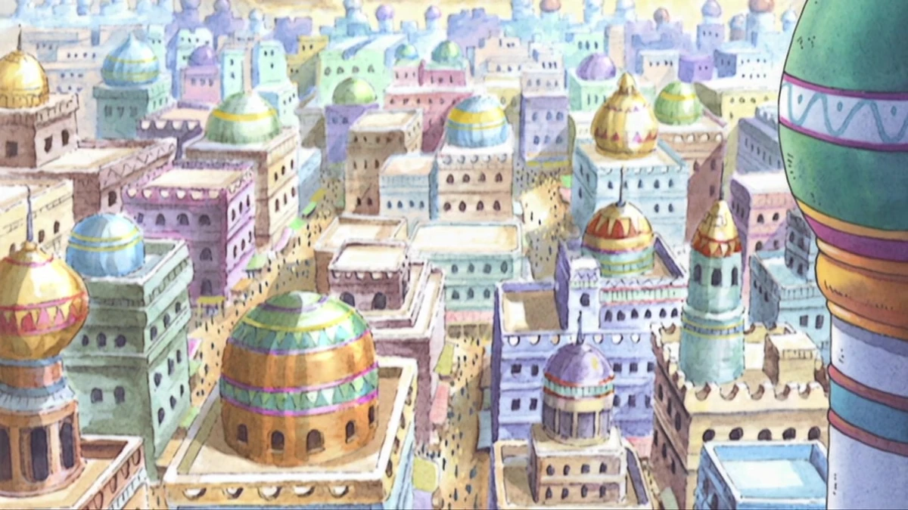
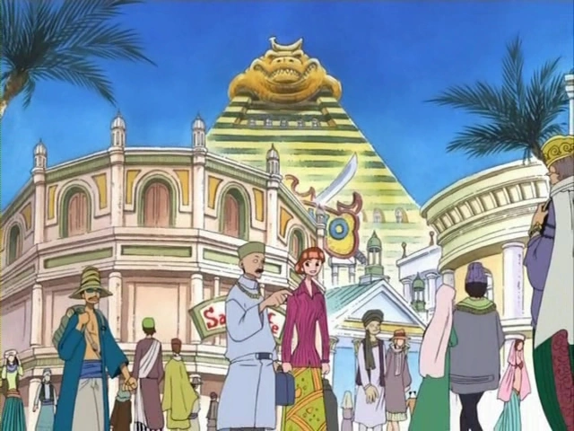
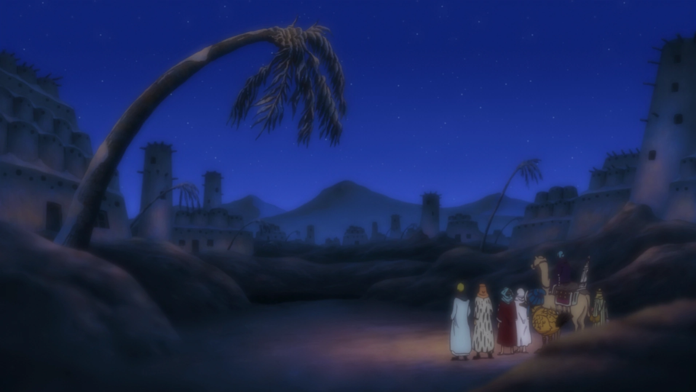
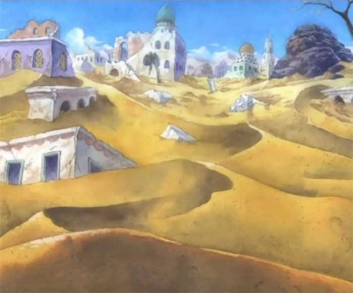

Alabasta
Alabasta es un extenso reino de One Piece caracterizado por sus grandes zonas desérticas, sus ciudades y sus diferentes paisajes. A pesar de las difíciles condiciones del territorio, el reino cuenta con importantes centros urbanos, rutas comerciales y lugares de interés.
Alubarna

Alubarna es la capital del reino de Alabasta y uno de sus principales centros políticos y comerciales. La ciudad reúne plazas, calles, comercios y grandes construcciones, por lo que suele ser uno de los lugares con mayor movimiento del reino.
Uno de sus lugares más destacados es el Palacio Real, una enorme construcción con cúpulas, torres y amplios patios. Cerca de las zonas principales también se encuentra una gran avenida comercial, donde se pueden encontrar alimentos, telas, especias y productos artesanales.
Para los visitantes, Alubarna permite conocer una parte importante de la cultura del reino. Sus edificios, mercados y espacios públicos muestran cómo se desarrolla la vida cotidiana en una de las ciudades más importantes de Alabasta.
Lugares y actividades
- Visitar el Palacio Real y conocer su arquitectura.
- Recorrer los mercados y comercios de la ciudad.
- Caminar por las plazas principales.
- Recorrer la avenida comercial y sus puestos.
- Probar comidas tradicionales en los restaurantes locales.
Alubarna representa el centro político y urbano de Alabasta. La combinación entre su arquitectura, sus comercios y sus espacios públicos la convierte en una de las visitas principales del reino.
Nanohana

Nanohana es una de las ciudades más conocidas de Alabasta y se encuentra cerca de la costa. Su ubicación favorece el comercio y hace que por sus calles circulen comerciantes, viajeros y habitantes de distintas regiones.
La ciudad también cuenta con una zona de playa rodeada por palmeras, puestos de comida y espacios de descanso. La cercanía del mar crea un ambiente diferente al de las regiones interiores del reino.
El puerto y los mercados forman una parte importante de la vida cotidiana de Nanohana. Los visitantes pueden recorrer sus calles comerciales, observar los barcos y conocer distintos productos de Alabasta.
Lugares y actividades
- Recorrer el puerto y observar los barcos.
- Visitar los mercados y conocer sus productos.
- Probar comidas tradicionales en los puestos locales.
- Recorrer las principales calles comerciales.
- Conocer la zona de playa y disfrutar del paisaje.
Nanohana combina actividad comercial, vida urbana y paisaje costero. Su puerto y sus mercados le dan una identidad diferente a la capital y la convierten en un lugar interesante para recorrer.
Rainbase

Rainbase es una de las ciudades más importantes de Alabasta y se caracteriza por sus grandes construcciones, calles amplias y numerosos establecimientos. Es un punto de encuentro para habitantes, comerciantes y viajeros.
Uno de sus principales atractivos es un enorme casino ubicado en el centro de la ciudad. El edificio destaca por su tamaño, sus entradas decoradas y sus espacios destinados al entretenimiento y al descanso.
Además del casino, Rainbase posee comercios, restaurantes, plazas y otros servicios. Su ubicación también permite utilizarla como punto de partida para conocer diferentes zonas del desierto.
Lugares y actividades
- Recorrer las principales calles de la ciudad.
- Conocer los comercios y mercados de Rainbase.
- Visitar la zona del casino.
- Probar comidas en los restaurantes locales.
- Explorar las regiones del desierto cercanas a la ciudad.
Rainbase se destaca por su tamaño, su actividad comercial y sus opciones de entretenimiento. Es una de las zonas urbanas más activas de Alabasta y un buen punto para comenzar otros recorridos.
Yuba

Yuba es una antigua ciudad situada en una región desértica de Alabasta. Durante mucho tiempo fue conocida por su oasis, que proporcionaba agua y permitía mantener una comunidad en medio de las extensas zonas de arena.
A diferencia de Alubarna o Rainbase, Yuba tiene un ambiente más tranquilo y está estrechamente relacionada con el paisaje natural. Sus construcciones y espacios públicos son más pequeños y están adaptados a las condiciones del desierto.
El oasis es el elemento más importante de la zona. Su presencia permite encontrar vegetación y un lugar de descanso para quienes atraviesan el desierto, además de mostrar la importancia del agua para los habitantes.
Lugares y actividades
- Visitar el oasis.
- Recorrer las calles y observar las construcciones.
- Descansar en las zonas cercanas al oasis.
- Conocer cómo viven sus habitantes en el desierto.
- Explorar los alrededores y disfrutar del paisaje.
Yuba representa una faceta más tranquila y natural de Alabasta. Su oasis permite comprender la importancia del agua y el contraste entre las ciudades y el desierto.
Erumalu

Erumalu es una antigua ciudad de Alabasta que se desarrolló alrededor de un oasis. La presencia de agua permitió que sus habitantes formaran una comunidad estable en medio del desierto.
Con el tiempo, la falta de lluvias y la disminución del agua afectaron a la ciudad. La sequía perjudicó los cultivos, los comercios y otras actividades, provocando que muchos habitantes abandonaran la región.
Actualmente, sus restos permiten imaginar cómo era la vida en una antigua ciudad del desierto. Su historia muestra la importancia de los recursos naturales para las comunidades de Alabasta.
Lugares y actividades
- Recorrer las antiguas calles y observar los restos.
- Conocer la zona donde se encontraba el oasis.
- Explorar el paisaje desértico.
- Conocer la historia de sus habitantes.
- Observar las construcciones adaptadas al desierto.
Erumalu es un lugar de interés histórico que muestra cómo la falta de agua puede transformar una comunidad. Sus restos permiten conocer una parte diferente de la historia de Alabasta.
Katorea
Katorea es una de las ciudades de Alabasta y se encuentra rodeada por el paisaje desértico del reino. Su ubicación la convierte en un punto de paso para habitantes y viajeros que se desplazan entre diferentes regiones.
A diferencia de las grandes ciudades, Katorea presenta un ambiente más tranquilo. Sus calles y pequeños comercios ofrecen alimentos, agua y otros productos necesarios para quienes atraviesan el desierto.
El entorno forma una parte importante de la vida cotidiana. Las altas temperaturas y la falta de agua hacen que sus habitantes deban adaptarse al clima y aprovechar los espacios de sombra disponibles.
Lugares y actividades
- Recorrer las calles y pequeños comercios.
- Visitar los puestos locales.
- Conocer las zonas de descanso.
- Explorar los alrededores de la ciudad.
- Observar cómo sus habitantes se adaptan al desierto.
Katorea permite conocer una comunidad más pequeña y tranquila que las grandes ciudades del reino. Su relación con el desierto muestra otra forma de vida dentro de Alabasta.
Desierto de Alabasta

El desierto de Alabasta ocupa una gran parte del territorio del reino y es uno de sus elementos más característicos. Sus extensiones de arena conectan ciudades, pueblos y asentamientos.
Los caminos que atraviesan el desierto son utilizados por comerciantes, viajeros y habitantes. Las altas temperaturas y la escasez de agua hacen que los recorridos requieran preparación y que los oasis sean especialmente importantes.
Para los visitantes, el desierto ofrece un paisaje muy diferente al de las ciudades. Las dunas, los oasis y los largos caminos permiten conocer el entorno natural que caracteriza al reino.
Lugares y actividades
- Recorrer los caminos entre las diferentes regiones.
- Observar las dunas y el paisaje desértico.
- Visitar los oasis.
- Conocer las rutas utilizadas por comerciantes y viajeros.
- Explorar los alrededores de las principales ciudades.
El desierto es una parte fundamental de Alabasta porque influye en la vida, el transporte y la ubicación de sus comunidades. También permite apreciar el entorno natural que diferencia al reino.
Río Sandora

El río Sandora es uno de los principales cursos de agua de Alabasta y atraviesa parte de su territorio. En una región caracterizada por el desierto, su presencia resulta especialmente importante para las comunidades y los paisajes cercanos.
Una de las características más llamativas del río es la presencia del enorme Guardián de Sandora, una criatura de las historias locales que habita en las zonas más profundas. Por esta razón, algunos sectores son considerados peligrosos.
En las zonas más tranquilas, las orillas permiten observar la vegetación y el contraste entre el agua y las grandes extensiones de arena. El río también forma parte de los recorridos por las regiones naturales del reino.
Lugares y actividades
- Recorrer las zonas cercanas a las orillas.
- Observar la vegetación alrededor del río.
- Disfrutar de las zonas de descanso.
- Conocer la importancia del agua para las comunidades.
- Explorar los paisajes que aparecen a lo largo de su recorrido.
El río Sandora completa el recorrido por los paisajes de Alabasta al mostrar una zona natural muy diferente del desierto. Además, su importancia para las comunidades lo convierte en uno de los elementos naturales más destacados del reino.